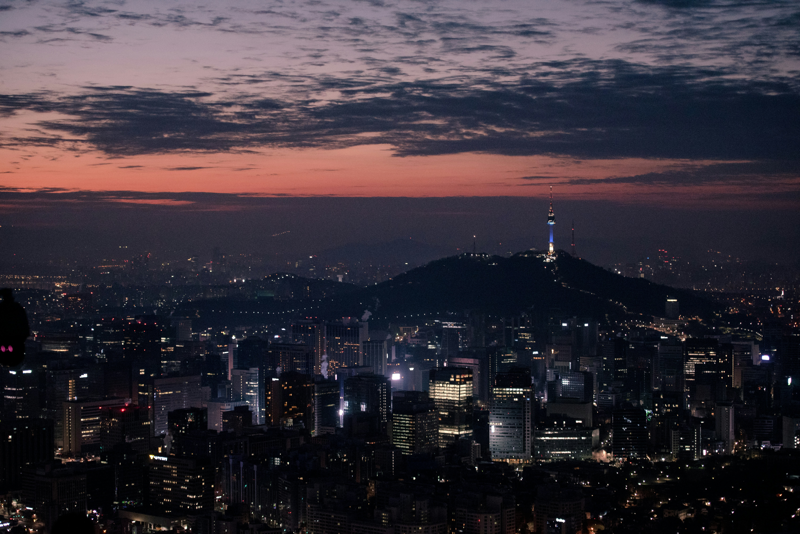
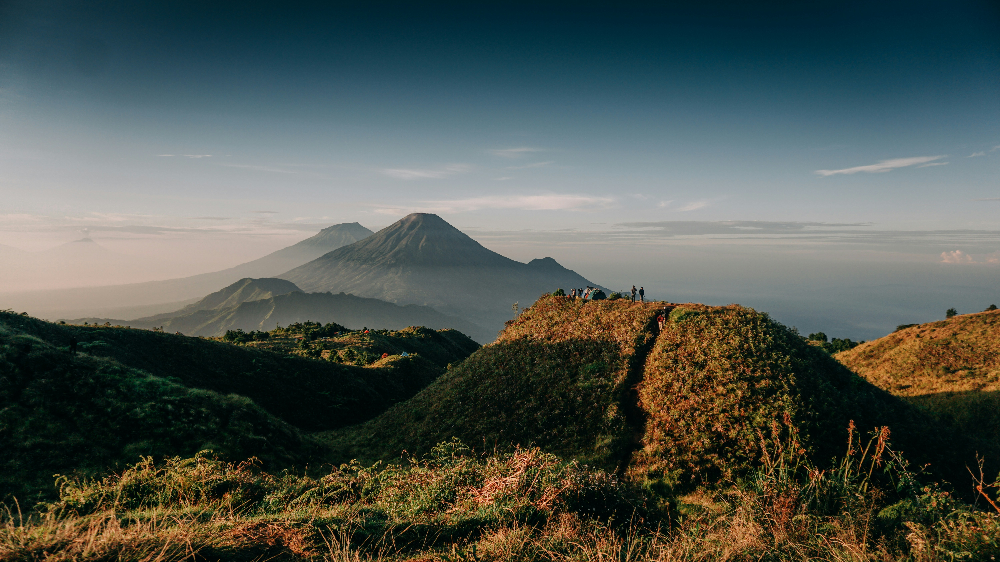
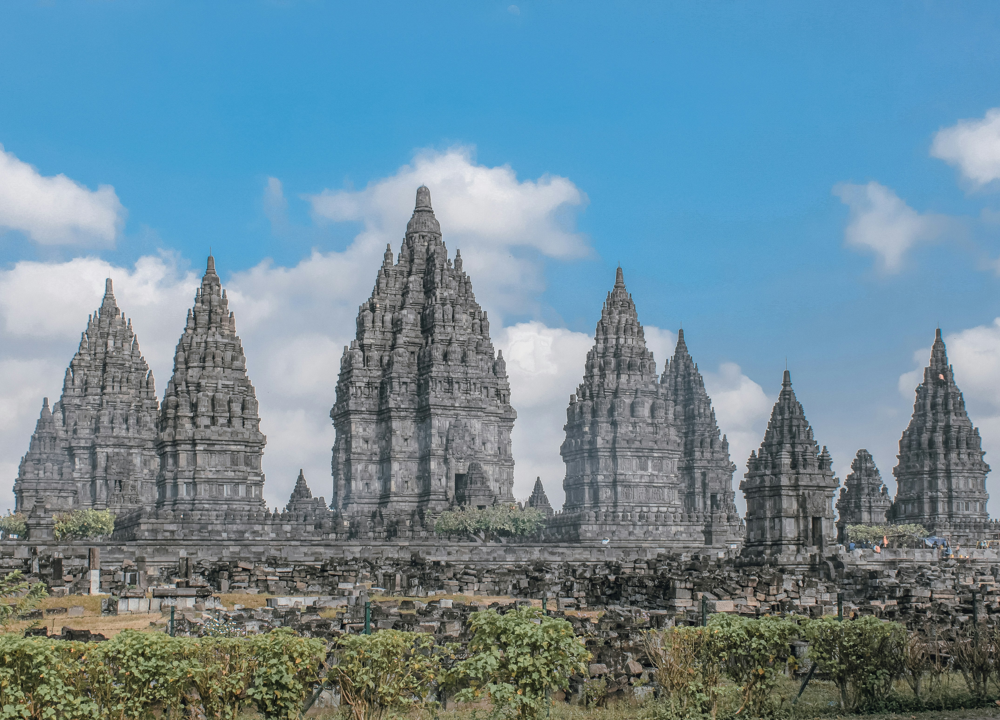
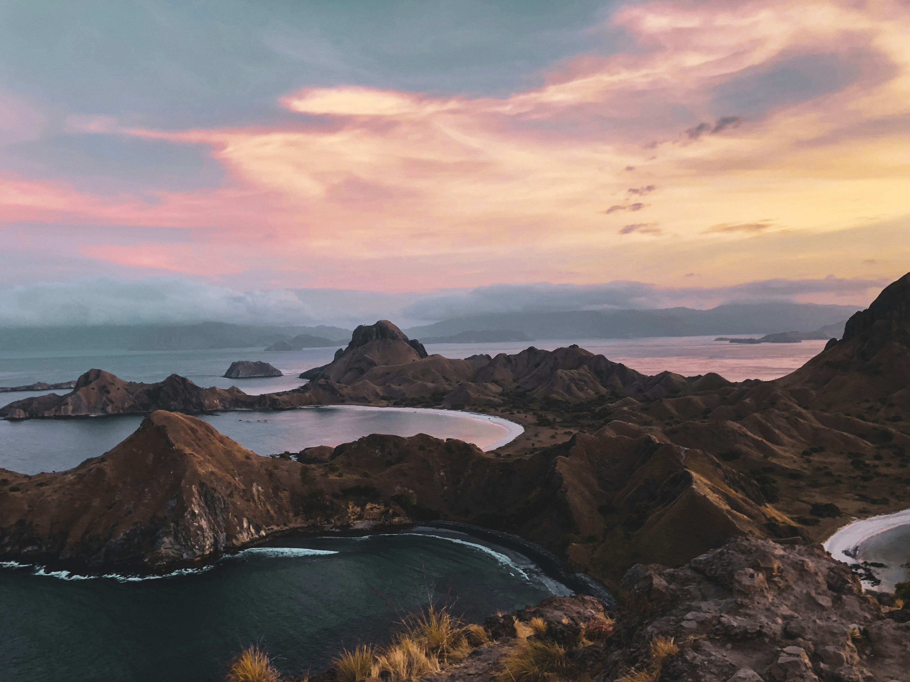

The Night Sky From Korea

Photo by Yohan Cho on Unsplash
Nikmati pemandangan malam yang indah di Kota Seoul. Saksikan bersama

Photo by Yohan Cho on Unsplash
Nikmati pemandangan malam yang indah di Kota Seoul. Saksikan bersama

Photo by Andri Hermawan on Unsplash
Banyak yang kita nikmati selain daratan tingginya. Klik selengkapnya.

Photo by Eugenia Clara on Unsplash
Selain Tugu dan Malioboro, terdapat candi Buddha terbesar. Klik untuk mengetahui info lebih lanjut.

Photo by Mathew Schwartz on Unsplash
Negeri Gajah Putih ini memang selalu menarik perhatian wisatawan. Eksplore lebih dalam.

Photo by william kusno on Unsplash
Labuan Bajo yang pasti menarik dan menawan. Klik selengkapnya

Photo by Ricardo Gomez Angel on Unsplash
Swiss dengan pegunungannya memang pasangan yang serasi. Cek Selengkapnya